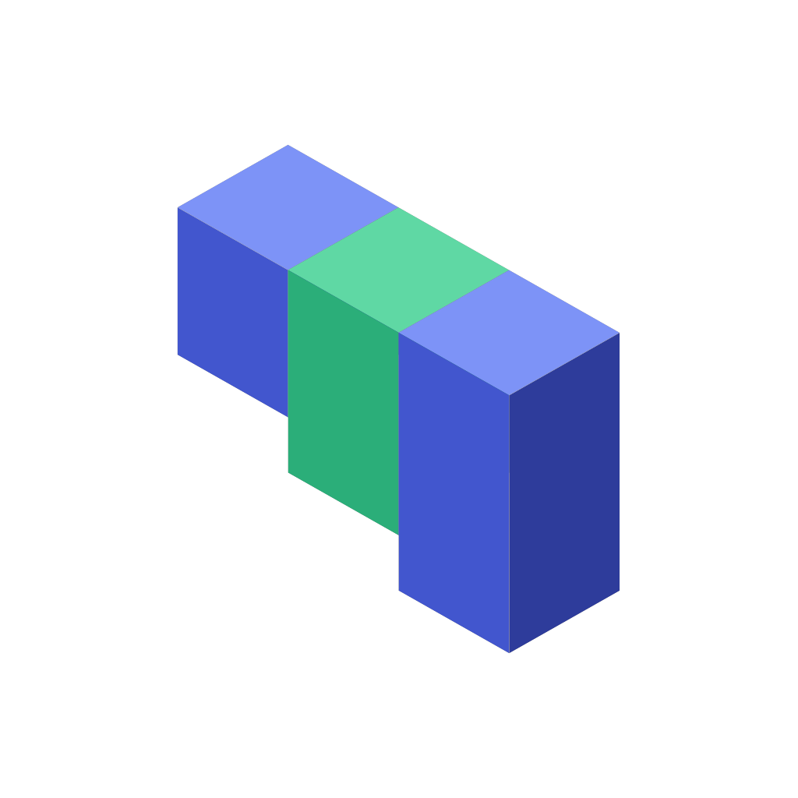

repo-operator
A modular, hermetic repository management tool for Docker-based Makefile workflows.

repo-operator is a modular and extensible repository management tool that streamlines development workflows by providing reusable, Docker-based, hermetic Makefile targets for common tasks. This ensures that all builds, tests, and operations are fully isolated and reproducible, regardless of the local environment. The project can be added as a Git submodule and used to manage operations like building, testing, and generating documentation across multiple repositories.
Background
The name and design of repo-operator draw from two concepts in mathematics and physics.
Hermeticity (Hermitian operators) comes from linear algebra and quantum mechanics. A Hermitian operator is self-adjoint — equal to its own conjugate transpose. In quantum mechanics, Hermitian operators represent observable quantities and carry a crucial property: they always produce real, stable eigenvalues. No matter how you apply them, the output is consistent and well-defined.
This maps directly to hermetic builds into the Site Reliability Engineering: a target that produces the same output regardless of who runs it, on what machine, at what time. The operator acts on the input and yields a predictable, stable result — self-contained, with no side-effects leaking in from the environment.
Non-locality in quantum mechanics describes how entangled particles influence each other regardless of the distance between them. In mathematics, non-local operators act on a function’s values across an entire domain, rather than at a single point.
This is the submodule model: a single change to repo-operator propagates to every repository that includes it, regardless of where those repos live. The operator is defined once; its effects are non-locally real.
The Problem
Every project ends up with the same boilerplate: Makefile targets for building, testing, linting, generating docs, managing Docker images. The targets accumulate organically, drift between repos, and quietly break when a tool version changes on someone’s machine.
repo-operator solves this by treating your development tooling as a versioned dependency. You pull it in as a Git submodule, include the Makefiles you need, and every target runs inside a pinned Docker container — identical on every machine, every time. In addition, repo-operator provides an interface to treat these targets as reusable and configurable functions across different projects.
Repository Structure
repo-operator/
├── makefiles/
│ ├── base.mk # Core variables, help, environment, gitignore, pre-commit sync
│ ├── changelog.mk # Conventional commit linting and changelog generation
│ ├── golang.mk # Go build, test, lint
│ ├── helm.mk # Helm chart testing
│ ├── openapi.mk # OpenAPI → Markdown doc generation
│ ├── otel.mk # OpenTelemetry collector for local CI
│ ├── package.mk # Docker build, push, run, Kaniko, Dive
│ └── security.mk # Trivy vulnerability scanning
│
├── pre-commit-hooks/
│ ├── base.yaml # General hooks (merge conflicts, line endings, private keys…)
│ ├── helm.yaml # helm-docs auto-documentation
│ └── terragrunt.yaml # Terraform/Terragrunt fmt, validate, tflint
│
├── gitignore/
│ ├── Go.gitignore
│ ├── macOS.gitignore
│ └── terragrunt.gitignore
│
├── scripts/
│ ├── gitignore_sync.sh # Merges gitignore templates into your project's .gitignore
│ └── precommit_sync.sh # Merges pre-commit hook configs into .pre-commit-config.yaml
│
└── Makefile # repo-operator's own Makefile (uses base.mk + openapi.mk)Getting Started
Prerequisites
dockermakegit
1. Add as a submodule
Add repo-operator at any path that fits your project. For Go projects following the standard project layout, build/ is the conventional home for build/CI tooling:
git submodule add https://github.com/ioaiaaii/repo-operator.git build/repo-operator2. Initialise on a fresh clone
git submodule update --init --recursive3. Configure your root Makefile
Include only the modules relevant to your project:
# --- Override repo-operator defaults ---
override OPERATOR_PATH := build/repo-operator
override OPENAPI_FILE := api/OpenAPI/openapi.yaml
override OPENAPI_DOCS_PATH := docs/api
# --- Include the modules you need ---
include ${OPERATOR_PATH}/makefiles/base.mk
include ${OPERATOR_PATH}/makefiles/golang.mk
include ${OPERATOR_PATH}/makefiles/openapi.mk
include ${OPERATOR_PATH}/makefiles/package.mk
include ${OPERATOR_PATH}/makefiles/security.mk
include ${OPERATOR_PATH}/makefiles/changelog.mk4. Explore available targets
make help5. Sync gitignore and pre-commit hooks
make gitignore # Merges Go, macOS, terragrunt templates into .gitignore
make pre-commit-hooks # Merges hook configs into .pre-commit-config.yaml6. Keep the submodule up to date
Track the latest commit on master:
git submodule update --remote build/repo-operator
git add build/repo-operator
git commit -m "chore: bump repo-operator submodule"Or pin to a specific release tag instead:
cd build/repo-operator
git fetch --tags
git checkout v1.2.3
cd -
git add build/repo-operator
git commit -m "chore: pin repo-operator to v1.2.3"The parent repo records the submodule’s commit SHA — bumping the submodule and committing in the parent are two separate steps.
Makefile Modules
All targets run inside pinned Docker containers — no local toolchain required beyond docker and make.
base.mk
Core variables and shared utilities. Always include this first.
| Target | Description |
|---|---|
help |
Auto-generated target list from all included .mk files |
environment |
Print current Git tag, branch, version, Go path and version |
gitignore |
Merge gitignore/ templates into the project’s .gitignore |
pre-commit-hooks |
Merge pre-commit-hooks/ configs into .pre-commit-config.yaml |
pre-commit-hooks-list |
List available pre-commit hook config files |
Key variables set in base.mk: MODULE, COMMIT, TAG, BRANCH, VERSION, SRC, BUILD_PATH, DEPLOY_PATH, and shared Docker command wrappers (UBUNTU_CMD, HELM_CONTAINER_CMD, CT_CONTAINER_CMD).
golang.mk
Hermetic Go build and quality targets. No local Go installation needed.
| Target | Description |
|---|---|
go-mod-update |
Update all Go dependencies to latest |
go-mod-sync |
Run go mod tidy, vendor, and verify |
go-lint |
Run golangci-lint with your CI config |
go-test |
Run the full test suite |
go-build |
Build a Linux/amd64 binary with version ldflags injected |
The binary is stamped at build time with BuildVersion, BuildHash, and BuildTime via ldflags — expects a pkg/version package in your module.
changelog.mk
Conventional commit enforcement and automated changelog generation.
| Target | Description |
|---|---|
conventional-commit-lint |
Lint commit messages from origin/master to HEAD |
conventional-changelog |
Generate CHANGELOG.md (runs lint first) |
conventional-changelog-release |
Generate changelog for a specific tag (for GitHub release notes) |
Expects a commitlint config at build/changelog/.commitlintrc.yml and a git-chglog config at build/changelog/config.yml.
helm.mk
Helm chart linting via chart-testing.
| Target | Description |
|---|---|
chart-testing |
Run ct lint against all charts |
Expects a chart-testing config at build/ci/.chart-testing.yaml. Charts should live under deploy/.
openapi.mk
Generate human-readable API documentation from an OpenAPI spec.
| Target | Description |
|---|---|
generate-docs |
Run openapi-generator to produce Markdown docs |
| Variable | Description |
|---|---|
OPENAPI_FILE |
Path to your openapi.yaml spec file |
OPENAPI_DOCS_PATH |
Output directory for generated Markdown |
otel.mk
Spin up a local OpenTelemetry Collector for CI or local observability testing.
| Target | Description |
|---|---|
otel-ci |
Start otelcol-contrib with your config, exposing standard OTLP ports |
Expects a collector config at build/ci/.otel-collector-config.yaml. Ports exposed: 4317 (gRPC), 4318 (HTTP), 8888, 8889, 1888, 13133.
package.mk
Full Docker image lifecycle management.
| Target | Description |
|---|---|
image-lint |
Run hadolint on a Dockerfile |
docker-image |
Build a Docker image tagged with the sanitised VERSION |
docker-push |
Tag and push the image to a registry |
docker-run |
Run a container, auto-detecting the exposed port and creating a named network |
kaniko-docker-image |
Build and push via Kaniko (supports GCP Workload Identity and local gcloud credentials) |
dive-ci |
Inspect image layers and efficiency with dive in CI mode |
Dynamic arguments:
make docker-image DOCKER_IMAGE=my-service
make docker-push DOCKER_IMAGE=my-service DOCKER_IMAGE_REPO=registry.example.com/myorg
make docker-run DOCKER_IMAGE=my-service
make kaniko-docker-image DOCKER_IMAGE=my-service DOCKER_IMAGE_REPO=gcr.io/my-project
make dive-ci DOCKER_IMAGE=my-serviceDockerfiles are expected at ${BUILD_PATH}/package/${DOCKER_IMAGE}/Dockerfile. The docker-image target injects LD_FLAGS as a build arg for Go binary stamping.
security.mk
Vulnerability scanning with Trivy.
| Target | Description |
|---|---|
trivy-scan |
Run Trivy scanner, accepts arbitrary Trivy args |
make trivy-scan TRIVY_ARGS="fs --exit-code 1 --severity HIGH,CRITICAL ."Pre-commit Hook Templates
repo-operator ships three composable hook configs. Running make pre-commit-hooks merges them into your project’s .pre-commit-config.yaml, skipping any entries already present.
| File | Hooks included |
|---|---|
base.yaml |
Large file checks, merge conflict detection, private key detection, line ending normalisation, executable shebangs |
helm.yaml |
helm-docs — auto-generates chart README from values.yaml |
terragrunt.yaml |
terraform-fmt, terraform-validate, tflint, shellcheck, terragrunt-hclfmt |
Gitignore Templates
Running make gitignore merges these templates into your project’s .gitignore, skipping any lines already present:
Go.gitignoremacOS.gitignoreterragrunt.gitignore
Customisation
Override any variable before the include statements:
override OPERATOR_PATH := build/repo-operator
override SRC := .
override BUILD_PATH := build
override DEPLOY_PATH := deploy
override OPENAPI_FILE := api/openapi.yaml
override OPENAPI_DOCS_PATH := docs/api
override KUBECONFIG := path/to/kubeconfig # optional, for helm targetsAdding your own targets
Annotate with ## and they appear automatically in make help:
include ${OPERATOR_PATH}/makefiles/base.mk
## Run database migrations
.PHONY: migrate
migrate:
./scripts/migrate.sh